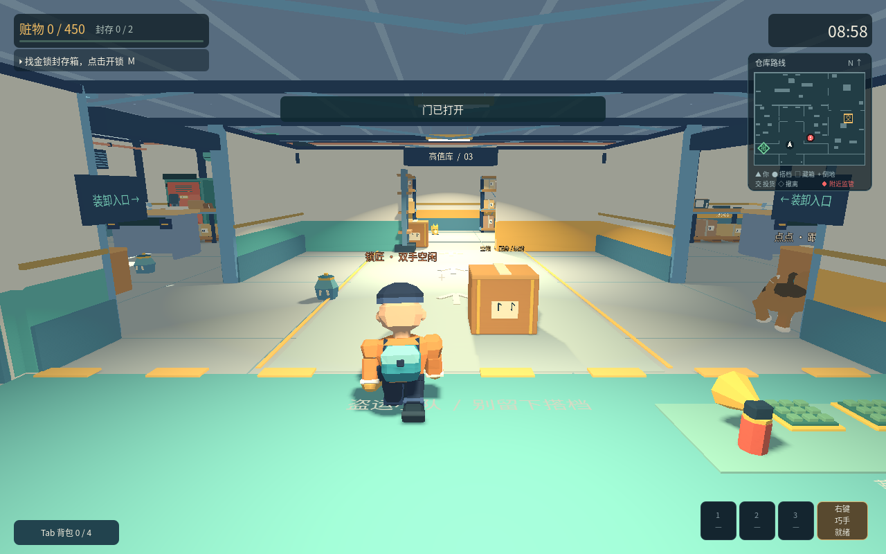

PC
Windows 版
v0.6.2 · ZIP 压缩包 · 53.9 MB
免费下载 Windows 版合作潜入试玩游戏。整理装备、挑选委托，和朋友一起出发。下载后在电脑上游玩。

v0.6.2：角色、宠物、货物和仓库统一新美术；减少界面遮挡，修复贴墙镜头。保留同网双人、三档难度和角色被动。
v0.6.2 · ZIP 压缩包 · 53.9 MB
免费下载 Windows 版v0.6.2 · ZIP 压缩包 · 75.5 MB
免费下载 Mac 版0.4.0 及更早版请从此页面手动下载。0.5.0 起可通过游戏内签名更新源检查新版；Mac 未公证包仍需遵循系统安装提示。Windows 自动安装可能失败，首次更新建议完整解压新版到独立文件夹。0.6.2 已增加安装失败诊断与已下载文件夹入口，但 Windows 真机自动安装及实体手柄尚未验证。异地联机公共服务尚未配置；四人和语音不在本版内。